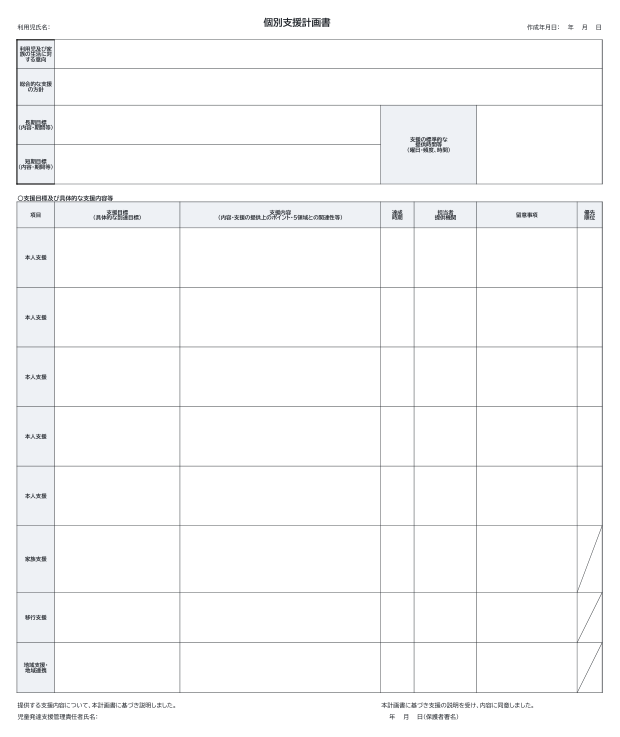

無料・登録不要
個別支援計画書・モニタリング記録の様式（Excel）
こども家庭庁の参考様式（令和6年度報酬改定）と同じ項目の、個別支援計画書とモニタリング記録のExcel様式です。A4横に収まるよう印刷設定済み。事業所名の追加など、自由に編集してお使いください。

入っているもの
- 個別支援計画書（参考様式と同じ項目：意向・方針・長期目標・短期目標・提供時間等・支援目標及び具体的な支援内容等）
- モニタリング記録（評価・理由・今後の方針）
- 使い方の説明シート
ファイル形式：.xlsx（Excel 2016以降・Googleスプレッドシート・LibreOffice）
文章も入れたい方へ。課題を選ぶと文例が入るExcel（3,980円）もあります。